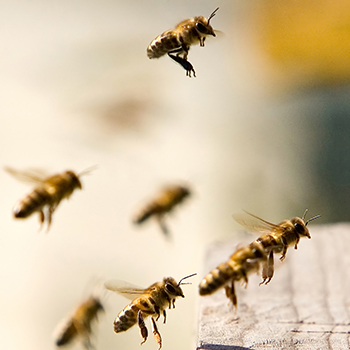

Etape 1 L'insecte attiré par la plante
- Cette attraction se fait par la couleur des fleurs, les éventuels motifs présents sur les pétales, la forme et la taille des pétales mais aussi par l’odeur que les fleurs dégagent.
- Tous les insectes ne préfèrent pas les mêmes couleurs de fleurs. Les papillons vivant le jour préféreraient les fleurs bleues, violettes ou roses, ceux vivant la nuit préfèrent les fleurs blanches et les diptères plutôt les fleurs jaunes.
- Les insectes sont aussi sensibles à la forme des fleurs. Selon leur forme, les fleurs n’attirent pas les mêmes insectes. Tous les insectes ne peuvent pas se nourrir sur tous les types de fleurs. Par exemple les papillons qui ont une longue trompe peuvent absorber le nectar au fond de long tube sur certaines fleurs alors que les insectes qui ont des pièces buccales plus courtes ne le peuvent pas.
- Les insectes sont capables de détecter différents types d’odeurs
- Des odeurs fleuries et agréables perceptibles aussi par l’Homme. Les hyménoptères et lépidoptères sont souvent attirés par les fleurs présentant ce type d’odeur.
- Des odeurs non perceptibles par l’Homme comme des phéromones sexuelles. Certaines orchidées, entre autres, produisent des odeurs qui miment les phéromones sexuelles de femelles de certaines abeilles ce qui attire les mâles qui assurent alors la pollinisation.
- Des odeurs qui nous paraissent désagréables comme des odeurs de viande en décomposition. Les diptères sont souvent attirés par ce genre d’odeurs.
- Ces odeurs peuvent être produites par différentes parties de la fleur, les pétales, le pollen, le nectar. Lorsque le pollen ou le nectar sont odorants, ils fournissent un signal qui permet aux pollinisateurs de savoir qu’ils trouveront de quoi se nourrir sur la fleur. Cela permet d’éviter les visites inutiles sur des fleurs qui viennent d’être visitées par un autre insecte et donc n’ont plus de nectar ou sur des fleurs immatures qui ne produisent pas encore de pollen.
- Les fleurs ne sont pas toujours unies, elles peuvent présenter des points, des lignes ou des taches qui permettent à l’insecte de trouver le nectar. On appelle d’ailleurs ces formes des guides nectarifères.
- La symétrie des fleurs joue également un rôle dans l’attraction des insectes. Les fleurs à symétrie radiale sur lesquelles les insectes peuvent se poser dans différentes positions attirent souvent plus d’insectes différents que les fleurs à symétrie bilatérale. La forme de la fleur apporte des informations à l’insecte sur la façon de se positionner.